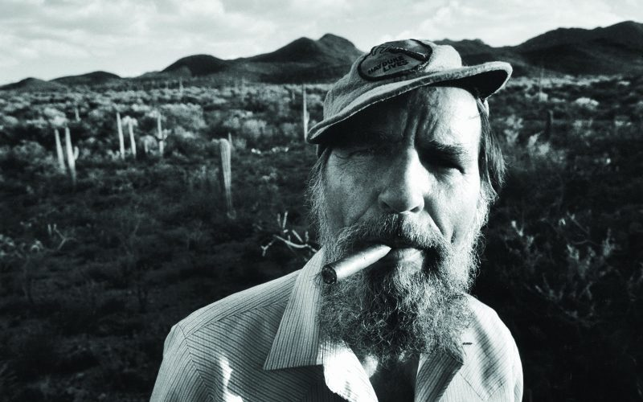

Edward Paul Abbey was an American author, essayist, and environmental activist noted for his advocacy of environmental issues and criticism of public land policies.
The son of a Pennsylvania farmer, Abbey earned a B.A. (1951) and an M.A. (1956) at the University of New Mexico. He subsequently worked as a park ranger and fire lookout for the National Park Service in the southwest, developing an intimacy with the region’s landscape that was to shape his writing career. His book Desert Solitaire (1968), considered by many to be his best, is an extended meditation on the sublime and forbidding wilderness of southeastern Utah and the human incursions into it. He husbanded his extensive knowledge of the region, admitting “I have written much about a good many places. But the best places of all I have never mentioned.
 Homepage